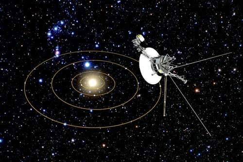

6° Notícia
Voyager 1 atinge a marca histórica de "um dia-luz" de distância da Terra
Após quase 50 anos viajando pelo espaço interestelar, a sonda Voyager 1 tornou-se o primeiro objeto construído pela humanidade a alcançar a distância exata que a luz percorre em 24 horas (cerca de 26 bilhões de quilômetros).
- O avanço: Mesmo viajando a altíssima velocidade fora da heliosfera solar, a sonda levou meio século para cobrir uma fração mínima da escala cósmica.
- Por que é incrível: O marco evidencia os limites físicos impostos pela velocidade da luz e pela radiação espacial, impulsionando projetos de microssondas propulsadas a laser (como o Breakthrough Starshot) para alcançar outras estrelas.
